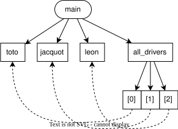
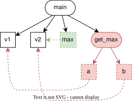
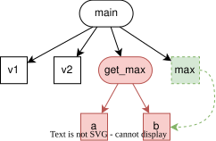
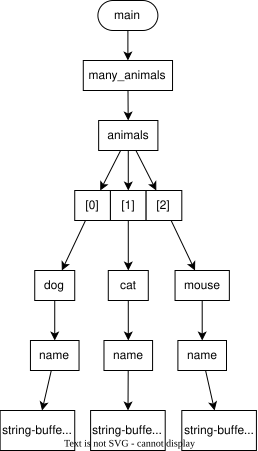
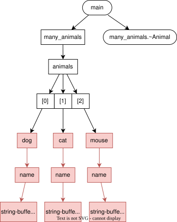
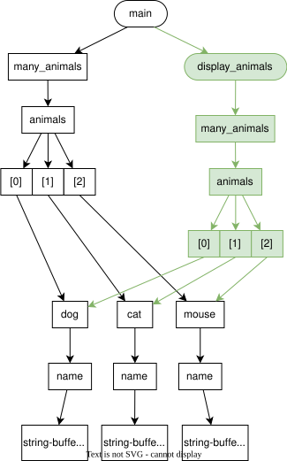
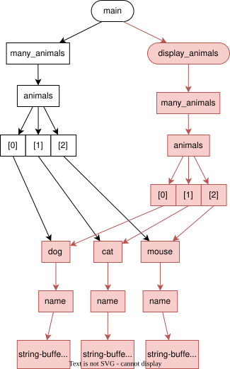
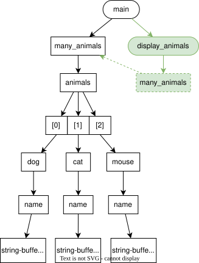

Ownership
Jusqu’ici, nous vous avons expliqué que contrairement au Java, les données que vous instanciez ne restent pas magiquement en vie tant que vous en avez besoin.
C’est donc à vous de garantir que vos données ne seront pas désinstanciées avant d’avoir fini de les utiliser.
Sur cette page, nous allons introduire le concept d’ownership, qui vous aidera à mieux architecturer votre code pour éviter de vous retrouver avec des dangling-references.
C’est quoi l’ownership ?
Littéralement, ownership signifie propriété (au sens de la possession de quelque chose).
En pratique, dans le domaine de la programmation, le owner (ou le propriétaire) d’une donnée est l’élément qui a la responsabilité de la désinstancier une fois qu’elle n’est plus utile au programme.
Nous allons vous montrer quelques exemples, afin que vous puissiez un peu mieux comprendre ce concept assez abstrait.
Au fur et à mesure des exemples, nous établirons le graphe d’ownership correspondant, c’est-à-dire la représentation graphique illustrant les relations d’ownership présentes au sein du programme.
Variable locale
Une variable locale est désinstanciée lorsqu’on sort du bloc dans lequel elle est définie.
void fcn()
{
int a = 3;
}Dans l’exemple ci-dessus, a est désinstanciée à la sortie de fcn.
On pourra donc dire que la donnée portée par a est ownée par la fonction fcn, ou encore que fcn own a.
Attribut-valeur
La donnée portée par un attribut-valeur est désinstanciée lorsque l’instance de la classe est détruite.
struct MyStruct
{
int value = 0;
};
int main()
{
MyStruct s {};
s.value = 5;
return 0;
}Ici, la donnée portée par l’attribut value de l’instance s est ownée par s.
On peut dire plus simplement que s own s.value.
Attribut-référence
Ici, ça devient un peu plus compliqué !
class Driver
{
};
class Car
{
public:
Car(Driver& driver) : _driver{driver} {}
private:
Driver& _driver;
};
class main()
{
Driver gontrand;
Car clio { gontrand };
return 0;
}La donnée portée par clio.driver correspond à la variable gontrand définie dans le main.
Le owner de clio.driver n’est donc pas clio, puisque la destruction de clio n’entrainera pas la destruction de gontrand.
Dans ce cas précis, c’est la fonction main qui own le contenu de clio.driver.
Ressources gérées par une classe
Lorsque le cycle de vie d’une ressource (mémoire, fichier, connexion réseau, etc) stockée à l’intérieur d’un objet est orchestré par les fonctions-membres de cet objet, alors ces ressources sont ownées par l’objet.
Prenons ici l’exemple d’un std::vector.
std::vector<Driver> drivers;
drivers.emplace_back();
drivers.emplace_back();
drivers.emplace_back();Chacun des Driver faisant partie du tableau est stocké sur un segment-mémoire alloué dynamiquement par l’objet drivers.
Ce segment sera libéré à la destruction de drivers (ou plus tôt, en fonction des fonctions qu’on appelera sur l’objet), entraînant la désinstanciation des Drivers.
On peut donc dire que drivers own chacun des éléments de type Driver ajoutés via l’appel à emplace_back.
Pointeur(-observant)
Un pointeur n’est pas ownant. Comme les références, ils servent simplement à référencer des données pré-existantes.
Si un pointeur est désinstanciée, la donnée pointée ne l’est généralement pas !
Mais du coup, vous devez vous demander quel est leur intérêt, sachant qu’on a déjà les références…
Eh bien les références ne permettent pas de faire autant de choses que les pointeurs.
-
Vous ne pouvez pas créer de référence qui ne référence rien, alors qu’un pointeur peut être nul :
int& ref_on_nothing; // => Aïe, ça compile pas int* ptr_on_nothing = nullptr; // => Ok -
Une fois une référence définie, celle-ci référencera la même donnée pour toujours, tandis qu’un pointeur peut être réaffecté :
int& ref = data_1; ref = data_2; // => ref fait toujours référence à data_1, le contenu de data_2 a simplement été assigné à data_1 int* ptr = &data_1; ptr = &data_2; // => data_1 n'a pas changé et ptr pointe désormais sur data_2Comment pourriez-vous dessiner le graphe d’ownership du programme suivant, une fois arrivé à la ligne 8 :
1 2 3 4 5 6 7 8 9 10int main() { auto toto = Driver {}; auto jacquot = Driver {}; auto leon = Driver {}; auto all_drivers = std::vector<const Driver*> { &toto, &jacquot, &leon }; return 0; }Les éléments de
all_driversétant des pointeurs, on utilise un contour plein pour les cases du tableau.
En revanche, comme ces pointeurs ne contrôlent pas le cycle de vie de chacun desDrivers, on les relie vers eux avec des flèches en pointillé.
-
Les réferences ne peuvent pas. Typiquement, on ne peut pas créer un
std::vector<const Driver&>, alors on est obligé d’utiliser des astuces que nous verrons plus tard.
En revanche, rappelez vous que les pointeurs nuls sont la cause première des segfault, donc il est généralement préférable d’utiliser une référence si on le peut.
Pointeur-ownant
En C++, rien n’est simple, et les pointeurs sont parfois des pointer-ownant, c’est-à-dire des pointeurs responsables de la ressource pointée.
C’est généralement déconseillé et on trouve ça plutôt dans le code légacy. Si on veut un pointer qui own la ressource pointée explicitement, on utilise plutôt des std::unique_ptr que l’on verra dans le chapitre 5.
Un pointer est ownant s’il gère manifestement la donnée pointée. Le problème avec cette phrase est le “manifestement”, qui demande d’analyser le code en détail.
int* get_int(int value)
{
auto* ptr = new int { value };
return ptr;
}
void calling_function()
{
auto* five = get_int(5);
std::cout << *five << std::endl;
delete five; // Doit-ton détruire five ou pas ?
}Dans le code ci-dessus, à l’intérieur de la fonction get_int, ptr est un pointeur-ownant.
En effet, on l’a défini dans l’objectif de stocker l’adresse d’un bloc mémoire fraîchement alloué pour stocker un entier.
Il est par conséquent manifestement responsable du cycle de vie de cet entier.
Puisque get_int renvoie ce pointeur, c’est ensuite calling_function qui en devient manifestement responsable, puisque personne d’autre n’y a accès.
On voit bien que c’est une mauvaise pratique. Imaginons que c’est à vous d’écrire calling_function. Pour savoir si vous devez détruire five ou non, il faut analyser le code de get_int.
Par exemple, si on implémente get_int comme en dessous, il ne faudrait pas détruire five dans calling_function.
std::vector<int*> my_int_vect;
int* get_int(int value)
{
for (auto p : my_int_vect)
{
if (*p == value)
return p
}
return nullptr;
}Dans cette seconde implémentation, il est probable que c’est my_int_vect qui soit responsable de libérer le pointeur retourné par get_int (et ça n’a rien de manifeste).
Sans preuve du contraire, il faut considérer un pointeur comme observant. En effet, c’est le comportement par défaut: la destruction d’un pointeur n’entraine pas la destruction de la donnée pointée. Pour qu’un pointeur soit ownant, il faut en avoir une preuve manifeste.
Exercices pratiques
Nous allons maintenant vous présenter quelques petits bouts de code.
Vous devrez dessiner le graphe d’ownership correspondant à l’état du programme aux instructions indiquées, et en déduire les éventuels problèmes s’il y en a.
Si vous souhaitez dessiner vos graphes sur ordinateur, vous pouvez utiliser draw.io.
Cas n°1
|
|
-
Dessinez le graphe d’ownership à la ligne 3, lorsque le
mainvient d’appelerget_max. -
Dessinez maintenant le graphe d’ownership associé au retour de la fonction
get_maxdans lemain.
Il faut faire pointer la variable-référence
maxsurv2, et non surb.
En effet,bn’est pas une donnée, juste un alias, on ne peut donc pas faire pointer une référence dessus.
-
Redessinez le graphe correspondant au retour de la fonction
get_max, mais en supposant queget_maxattende ses paramètres par valeur. Le résultat est par contre toujours retourné par référence.Les paramètres
aetbsont maintenant des données.
La variable-référencemaxpointera donc surbet plus surv2.
-
Quel problème est mis en avant par ce graphe ?
On a une référence qui pointe sur une donnée qui été désinstanciée : il s’agit d’une dangling-reference.
Or cette référence est utilisée ligne 12, on a donc un undefined behavior…
Cas n°2
|
|
-
Établissez le graphe d’ownership du programme à la ligne 33.
Selon-vous, les pointeurs contenus dansManyAnimals::animalssont-ils ownants ou observants ?Le destructeur de
ManyAnimalsse charge de libérer la mémoire associée à chacun des pointeurs contenus dans l’attributanimals.
Ces pointeurs étant utilisés pour gérer le cycle de vie des données pointées, il s’agit de pointeurs-ownants.
On représente donc les relations associées avec des flèches pleines.
-
Dessinez maintenant les modifications dans ce graphe une fois arrivé à la ligne 14 (c’est-à-dire pendant la sortie du
main, lorsque l’instance demany_animalsest en cours de destruction).À la ligne 14, les instances de
Animalont toutes été libérées.

-
La ligne 34 est commentée, car si elle ne l’est pas, le programme se termine avec une erreur.
Pour comprendre ce qu’il se passe, reprenez le graphe de la question 1, et ajoutez les modifications décrivant l’état du programme une fois arrivé dans la fonctiondisplay_animals(ligne 20).
Quel est le problème dans ce graphe ?L’argument est passé par valeur, on a donc une copie de la variable
many_animals.
En revanche, lorsqu’un pointeur est copié, l’élément pointé ne l’est pas.
Le problème ici, c’est qu’on a maintenant deux owners pour les donnéesdog,catetmouse. -
Dessinez maintenant le graphe à la sortie de la fonction
display_animals.
Expliquez ce qui pose problème et qui empêche le programme de se terminer correctement.À la fin de
display_animals, on désinstancie le paramètremany_animals, ainsi que les données qu’il own récursivement.
Les pointeurs contenus dansmany_animals.animals(la variable dumain) pointent donc sur des données invalidées.
À la destruction demany_animals, les instructionsdelete avont par conséquent échouer. -
Proposez une solution pour résoudre le problème et dessinez le graphe d’ownership associé.
Il suffit de changer la signature de
display_animalspour passer le paramètre par référence (qui peut d’ailleurs être constante). Les références n’ayant pas d’impact sur le cycle de vie des données, lorsque l’on sort de la fonction, aucun élément ne sera désinstancié.
Synthèse
- L’élément responsable du cycle de vie d’une donnée est son owner.
- Une classe own ses champs qui ne sont pas des références.
- Une fonction own ses variables locales qui ne sont pas des références.
- Un pointeur est généralement observant, c’est-à-dire qu’il n’own pas la donnée pointée. Dans ce cas, il a le même rôle qu’une référence, si ce n’est qu’il peut être vide (=
nullptr) et est réassignable. - Un pointeur peut néanmoins être ownant dans certains cas. Dans une classe, c’est souvent parce que le destructeur de la classe détruit explicitement les données pointées.
- Un graphe d’ownership permet de détecter différents problèmes :
- Si une donnée est ownée par plusieurs éléments ➔ libération multiple,
- Si on référence une donnée qui n’existe plus ➔ dangling-reference.
- Savoir qui own une donnée aide à savoir s’il est valide d’y accéder ou pas.